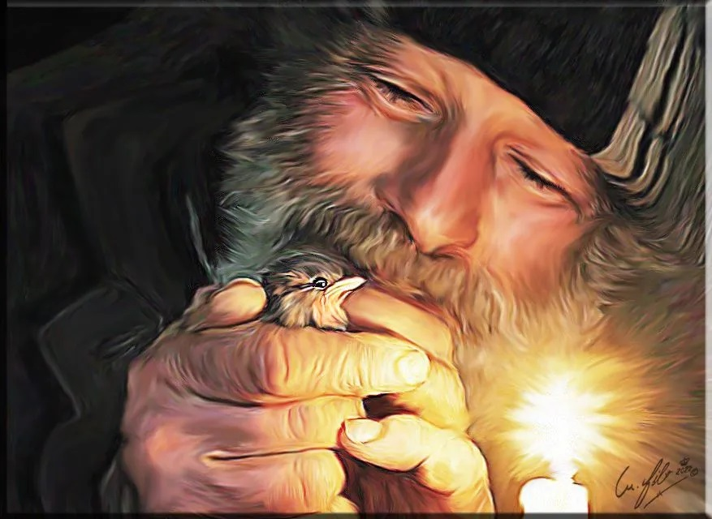
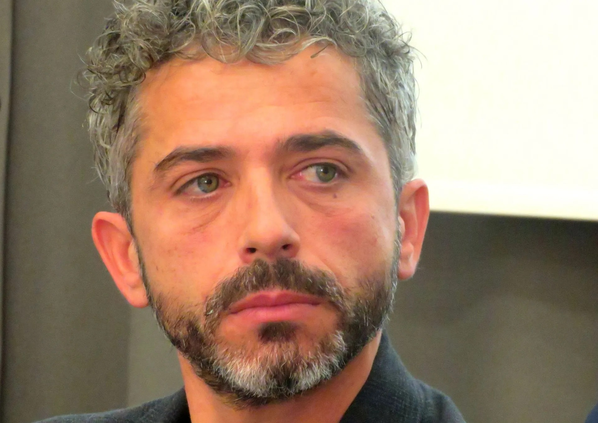

Un tout petit péché
Tome 1 : La fontaine de la vie

Résumé :
Ce Roman est basé sur une histoire vraie, celle de Giuseppe Belvedere, dit Nino, humaniste, poète et
homme libre, Giuseppe, Italien, arrivait à Paris en 1970. Il vécut ses douze dernières années à la rue,
seul dans sa camionette stationnée rue Beaubourg à Paris 4. Il était devenu l'homme à abattre du
quartier du Marais. Qu'avait'il donc fait de si grave pour mériter la mort ?
Son meurtre reste encore impuni.
Depuis l'au-delà, il dénonce et décrit ses assassins, raconte des pans de sa vie et observe sans
complaisance tous les comportements humains pour en dégager l'essence même de la vie. Pour les
couipables, le fantôme de Giuseppe sera sans pitié...
EXTRAIT Scène N°51, chapitre : « Spes contra spem » (Espérer contre toute espérance)
LA PETITE FILLE
Quand on ne peut enseigner que si on a vécu.
Deux enfants s’approchent de la fontaine. « Maman, maman, c’est quoi qu’il y a dedans ? » demande la petite fille. Elle semble avoir quatre ou cinq ans. « On ne dit pas c’est quoi que, mais qu’est-ce qu’il y a dedans » lui répond sa maman. Le petit garçon qui est un peu plus vieux se moque de sa petite sœur. Il préfère continuer sa route. « Viens, je vais te montrer » lui dis-je en m’approchant d’elle. Mais là, je réalise qu’elle ne me voit pas, alors je la regarde simplement. Son beau visage et ses petits yeux ne demandent qu’à découvrir le mystère qu’il y a dans la vasque. Sa maman lui prend la main et la soulève pour lui montrer les secrets de la vie. « C’est quoi ça ? » « Ce sont des graines pour les oiseaux. Apparemment, ils vont en manquer bientôt. » « On peut aller en acheter maintenant ? » demande la petite. « On fait les courses d’abord et on reviendra pour voir si quelqu’un d’autre aura remis du grain. » La petite fille pâlit. Son visage avait changé. Ses yeux ne pétillaient plus. Le mystère avait une autre existence. Celle d’être pour les autres et pas pour elle. Alors, elle demanda à sa maman de lui donner un peu d’eau de la fontaine. « Ce n’est pas propre, lui répondit sa maman. Ils mettent tous leurs mains ou leurs pattes dans le bassin. » « Mais, maman ! » protesta la petite. « Il n’y a pas de mais, c’est comme ça ! » La maman était devenue grognon et ne s’offensait pas de la perte de son prochain. Jamais elle n’avait appris à partager, ni avec un humain, ni avec un animal. De quel droit pouvait-elle priver ses enfants du regard sur le monde ? Une petite fille s’éveille à la vie…Pour lui, le grand garçon, c’est déjà bien tard. Mais elle, elle peut encore. Elle est intelligente et ne souffre aucunement de privations. Alors, elle doit découvrir le monde, se baigner dans l’eau et partager. Sa maman vient de lui prendre le cadeau de la vie : purifier son âme et rompre le pain avec un ami, soit-il à plumes, à poils ou fait de sang et de chair.
Oeuvre de Mario Filograna "Giuseppe et le moineau de Paris"
EXTRAIT Scène N°25, chapitre : « Spiro, spero » (je respire, j’espère)
L’HUMANITE
Où l’on voit que parfois les personnes que nous croisons et qui nous marquent en bien ou en mal ne sont pas là par hasard.
« La vie réserve bien des surprises à ceux qui veulent la place de l’autre. Moi, je n’ai jamais voulu une autre place que la mienne, celle que j’ai construite, jour après jour, travail après travail. C’est ça vivre. Ce n’est pas envier ou jalouser. C’est trouver ce qui nous convient et, là-dessus, on est tous différents. On a tous à faire quelque chose. Moi, je l’ai compris trop tard. C’est le cas de beaucoup d’êtres humains. J’ai accompagné une femme, guidé des enfants, nourri des amis pour perpétuer les traditions, celles que nos ancêtres nous ont façonnées de leurs mains pour faire de nous des hommes civilisés, adaptés à ce monde. Mais ce qu’ils n’avaient pas prévu, c’est la folie de cette société. Plus personne ne pense au lendemain, aux enfants et à leur jeunesse, à la façon dont ils vont être éduqués pour grandir dans cette société qui ne respecte ni les vieux ni les combattants du bien. Place aux handicaps de l’esprit, aux maladies du cerveau, aux caprices des boutiquiers qui vendent ce qu’on leur demande de vendre sans se soucier si c’est bon ou pas pour les gens. Moi je crois en un avenir sombre fait de drames et de tracas. Je n’ai plus confiance en l’avenir de cette humanité parfaitement inhumaine. Ils ne se rendent pas compte du danger. Il y en a un et il sera terrible. Le danger c’est la mort, la solitude, la maladie, la folie, le faux. Tout est faux aujourd’hui, même les gens. Ils ne se voient pas comme ils sont. Ils veulent être autre chose : des robots, des morts-vivants, des enfants attardés, des jouisseurs de pacotille. Les puissants ont tout fait pour les rendre fous, invisibles, transparents, idiots, manipulables, impalpables, soumis. Ils sont tous morts ! Le réveil tardera et les cerveaux éveillés souffriront de ce manque d’humanisme même si tous les endormis pensent que l’humanisme existe encore. L’avenir est un trou noir, un gouffre sans fond et le mal produira ses effets sur tous les continents, sans exception. C’est l’inverse de ça que je voulais. L’éveil de la conscience, l’éveil de la souffrance car la souffrance apporte son lot de réveil des consciences. Il est dit que sans cela, le bien ne peut pas triompher du mal. Alors, Monsieur le Curé, il est temps de rassembler vos forces pour lutter contre ceux qui ne croient plus en rien. Une lutte bien pacifique mais ô combien essentielle tant elle sera utile. Mes prières n’ont pas changé les choses pour moi en tout cas, mais elles m’ont été d’un grand secours pour supporter ce que j’ai supporté. Je laisse à chacun sa liberté de croire ou pas en ce que je dis, mais j’affirme que bien des soucis attendent ceux qui ne veulent pas être les locomotives de la vie. La vie n’est pas un jeu, c’est un don, un cadeau que vos parents vous ont fait. Vous ne devez pas la gâcher, ce serait leur faire offense. C’est eux qui vous ont donné la vie, pas Dieu. C’est eux qui vous jugeront, pas Dieu. J’ai dit à papa que c’était lui qui me donnait le courage d’un lion et à maman que c’est elle qui me donnait l’amour que j’ai dans le cœur. »
Les Amis de Giuseppe Belvedere, Groupe Facebook
Il est impossible de passer de la vie “avec” à la vie “sans” du jour au lendemain." Et pourtant... L'histoire inoubliable du protecteur des oiseaux parisiens et le film de Sakina Mast "Giuseppe, les ailes du paradis" ont inspirés l'écrivaine Marie-Simone Poublon qui veut honorer la mémoire de Giuseppe Belvedere. Plusieurs mois après sa mort, Giuseppe continue de cheminer en nous, comme une « présence-absence » indescriptible. Marie Simone Poublon laisse une trace de Giuseppe, tout en revisitant le chemin parcouru, elle fait un bilan de l’essentiel, et y trouve aussi du sens. Elle conjure la mort en faisant perdurer l'histoire de cet Homme habité par un sentiment d’éternité. Des ouvrages faits de douleur et d’amour.
Marie-Simone Poublon
À mon ami Giuseppe,
« Si je suis la plume,
Giuseppe est la voix. »
Gaston Bonheur
Journaliste, écrivain, 1913-1980
« La première charité d’un village, c’est sa fontaine. »
Antonio Prata
Le cinéaste italo-suisse Antonio Prata, primé pour son film d'auteur de 56mn "Monsieur Pigeon", sorti en 2021 en salle.